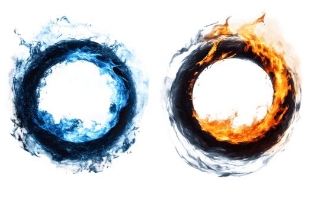

As you lie in your bed after a long, stressful day of school and work, pondering on the endless simulation your life is beginning to feel like. You’ve always dreamed of a different life. One where the unimaginable was possible and full of endless adventures, one where you had the ability to decide your own destiny. One where you were significant. You close your eyes and fall asleep but find yourself woken up in a pitch black room. You start to question whether you are dreaming or if this is real life, when suddenly you hear what sounds like a “woosh” and two portals appear before you. One blazing the deep warm colors of fire, and one of a chilling blue, it’s ice. Do you examine and go through the fire portal? (Fire Portal) , or do you examine and go through the ice portal? (Ice Portal)